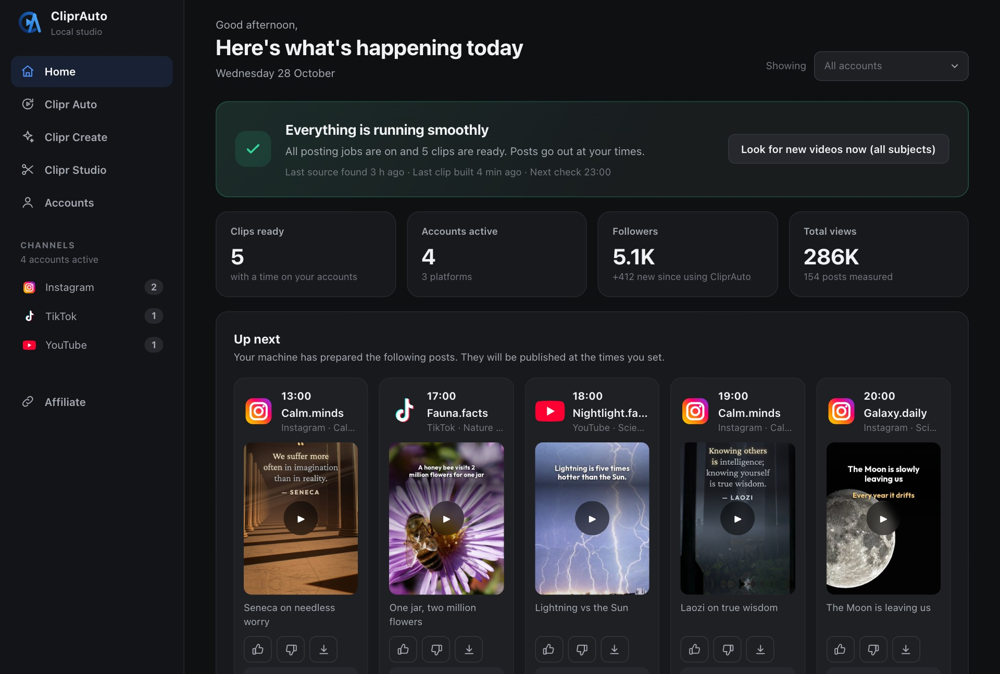

Your account. Running itself.
CliprAuto runs your TikTok, Instagram Reels and YouTube Shorts accounts every day: it finds the material, cuts the clips, checks every one, posts on your schedule and learns from the numbers. On your own computer, with the AI you already pay for.
- Pay once
- Mac and Windows
- Support included

- Runs on your own computer
- One payment, no subscription
- Onboarding and support included
The 6-step machine
- FindFinds videos that already work in your niche, and keeps the bank full on its own.
- BuildCuts long videos into short vertical clips with a hook line, subtitles and a caption.
- CheckChecks every finished clip. One that fails a check is never posted.
- PostPosts to TikTok, Instagram and YouTube on your times, from your own browser.
- MeasureReads the views back at six hours and at one day, and compares like with like.
- LearnMoves what wins up the queue next time. Starts after 20 posts per account.
What you do, once
In your own words
You sign in yourself
Or keep four times a day
Pay once. Own it.
Three sizes, one difference: how many accounts CliprAuto runs for you. No monthly fee, no add-ons. Onboarding and support are part of every price.
Minimum (Mac)
5 accounts across TikTok, Instagram and YouTube
- The complete CliprAuto for Mac
- Quick Start Guide: advanced in one week
- Onboarding and support included
- Updates included: fixes and improvements, for free
- Clipr Create included
14-day money-back guarantee
Creator (Mac)
10 accounts across TikTok, Instagram and YouTube
- The complete CliprAuto for Mac
- Quick Start Guide: advanced in one week
- Onboarding and support included
- Updates included: fixes and improvements, for free
- Clipr Create included
14-day money-back guarantee
Studio (Mac)
15 accounts across TikTok, Instagram and YouTube
- The complete CliprAuto for Mac
- Quick Start Guide: advanced in one week
- Onboarding and support included
- Updates and every new feature included, for free
- Clipr Create included
14-day money-back guarantee
Minimum (Windows)
5 accounts across TikTok, Instagram and YouTube
- The complete CliprAuto for Windows
- Quick Start Guide: advanced in one week
- Onboarding and support included
- Updates included: fixes and improvements, for free
- Clipr Create included
14-day money-back guarantee
Creator (Windows)
10 accounts across TikTok, Instagram and YouTube
- The complete CliprAuto for Windows
- Quick Start Guide: advanced in one week
- Onboarding and support included
- Updates included: fixes and improvements, for free
- Clipr Create included
14-day money-back guarantee
Studio (Windows)
15 accounts across TikTok, Instagram and YouTube
- The complete CliprAuto for Windows
- Quick Start Guide: advanced in one week
- Onboarding and support included
- Updates and every new feature included, for free
- Clipr Create included
14-day money-back guarantee
After you buy
Most of the setup is waiting for downloads. Your AI does the installing; you answer a few questions.
Your licence key and the file arrive by email.
A window opens per account and you sign in yourself. Your AI never sees your passwords.
Say what each account is about and when it should post, or keep four researched times a day.
It checks the whole chain once, then finds, builds, checks and posts on its own.
Questions about CliprAuto
Is there a monthly fee?
No. You pay once, and CliprAuto is yours.
How is CliprAuto different from clip tools like Opus Clip?
Clip tools turn a video you upload into clips, and the rest is up to you. CliprAuto runs the whole account: it finds the videos itself, makes and checks the clips, posts them on your times, measures the result and learns from it.
Can I run an account without showing my face?
Yes. CliprAuto makes clips from videos you are allowed to reuse, or from your own files. You never need to be on camera.
Which platforms does it post to?
TikTok, Instagram Reels and YouTube Shorts. Five, ten or fifteen accounts depending on your package, each with its own niche and times.
What do I need to run it?
A Mac or a Windows PC that can stay on, Claude Code or ChatGPT Codex (included with Claude Pro or ChatGPT Plus), and accounts on the platforms you want to post to. The requirements list comes with the package.
How much do I have to do myself?
Set it up once: niche, accounts, times. After that it finds, builds, checks and posts by itself. Keep the computer on and stay signed in to your AI and your accounts. You can approve clips by hand if you want to.
Who decides what gets posted?
CliprAuto builds and checks. Every clip passes the three rules and the quality bar before it is queued. You can approve clips by hand in the panel, or let the schedule run.
Where is my content?
On your computer. There are no servers: your videos, your accounts and your numbers are never uploaded to us.
What happens if something breaks?
A watchman checks CliprAuto every ten minutes, a built-in doctor finds the cause and fixes what it can, and a clip that fails a check is never posted. If a platform changes its pages, your AI helps repair it, and you can always write to us.
Are updates and new features included?
Minimum ($247) and Creator ($347) include updates: fixes and improvements, for free. Studio ($447) includes updates and every new feature we add over time, for free. You can move up to a bigger package later for $149.
What happens after I buy?
You get your licence key and the download by email. Drag the file into Claude Code or ChatGPT Codex and write "Install the machine": your AI installs CliprAuto and asks you a few simple questions along the way. A 2-page Quick Start Guide then shows seven things to ask your AI in your first week. Questions: info@cliprauto.com.